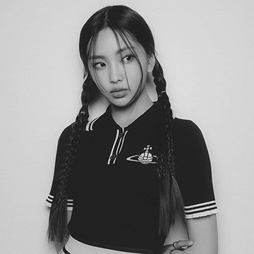

NewJeans, a South Korean girl group formed by ADOR, boasts a five-member lineup of Minji, Hanni, Danielle, Haerin, and Hyein. They are known for their girl-next-door image and a fusion of 1990s and 2000s pop and R&B, enriched with various dance and club influences. The name “NewJeans” cleverly signifies the timeless appeal of jeans in fashion and their ambition to create an enduring legacy in the music industry by ushering in a new generation of pop.
Their debut in July 2022 with the single “Attention” marked a significant milestone, as it became their first number-one hit on South Korea’s Circle Digital Chart. Subsequent releases included “Hype Boy” and “Cookie,” all featured on their eponymous debut EP released in August 2022. The group continued their success in January 2023 with the release of the single album “OMG,” featuring hit singles “Ditto” and “OMG.” “Ditto” became a sensation, holding the record as the longest-running number-one song on the Circle Digital Chart and securing their place on both the Billboard Hot 100 and the UK Singles Chart.
Hanni Pham
The captivating lead singer, was born in Melbourne, Victoria, Australia. Hanni can speak Vietnamese, English, and Korean. She is the 1st Vietnamese who became a Korean idol under HYBE. As a vocalist, Hanni possesses a voice that effortlessly weaves between cultural influences, infusing her music with a unique and captivating charm.
Danielle Marsh
Mo Jihye, popularly known as Danielle, is a creative individual born under the fiery sign of Aries. A captivating blend of her Australian-Korean heritage. Born with a natural affinity for the water, she is a good swimmer and also does surfing. She finds solace and joy in the embrace of water. She possesses a genuine passion for drawing and painting.
Lee Hyein
Hyein, whose birth name is Lee Hyein and zodiac sign is Taurus, is not your average K-Pop idol. She's a strawberry enthusiast with a sweet tooth, and her heart belongs to the magical world of Harry Potter, often found lost in its books. What sets her apart is her youth, as Hyein proudly holds the title of being the youngest K-Pop idol, a testament to her exceptional talent and early dedication to her craft.
Kang Haerin
Kang Haerin who's affectionately known as “Kitty Kang,” of their group, is a vibrant K-Pop star with a unique blend of cultural influences. As a pure Korean with a knack for languages, she fluently speaks English, bridging cultural gaps with her fans. Haerin's personality mirrors her love for bright colors and the sweet scent of flowers, which she incorporates into her music and fashion, making her a captivating and multi-dimensional artist in the K-Pop scene.
Kim Minji
Kim Minji is known by her English name Isabelle, brings the fiery energy as the rapper of the group. Born under the sign of the Monkey, she’s as playful as her zodiac suggests. Her love for ice cream knows no bounds, with a special fondness for New York Cheesecake flavor from Baskin-Robbins, which perfectly complements her dynamic stage presence. Minji’s rap skills are as smooth as her favorite dessert, making her a standout and essential part of the group’s musical tapestry.